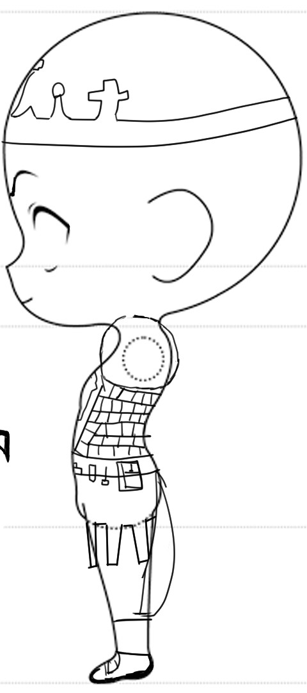
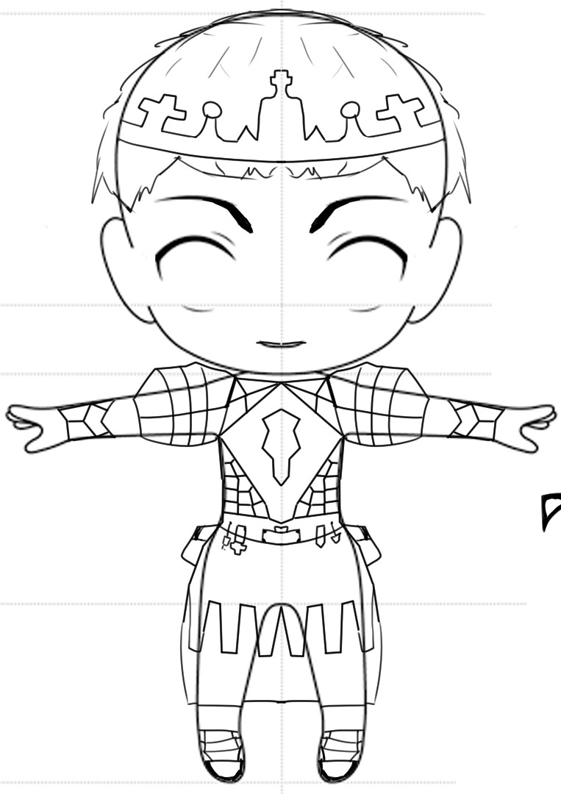
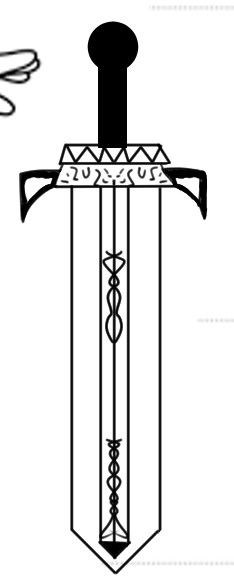
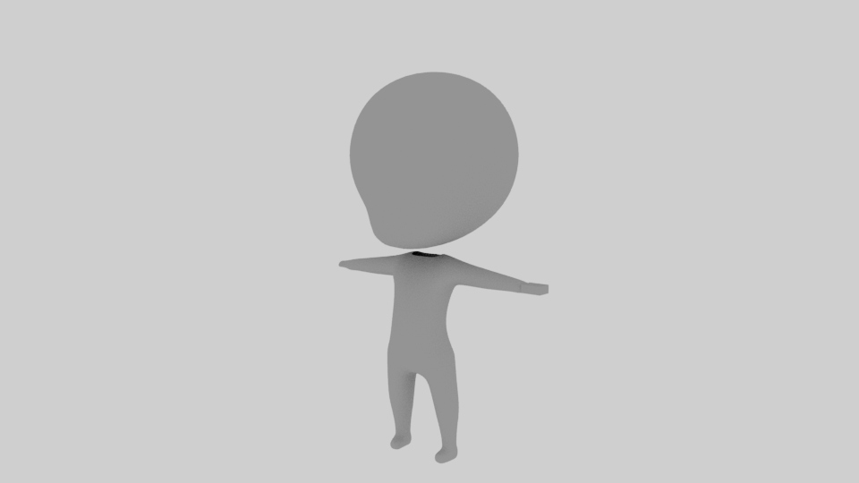
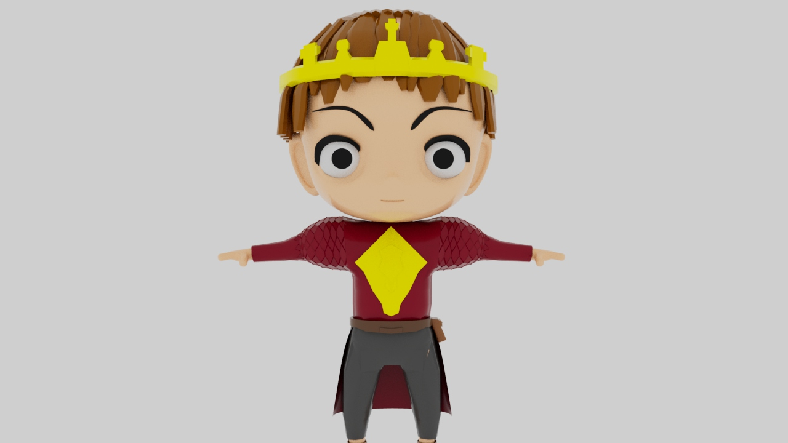
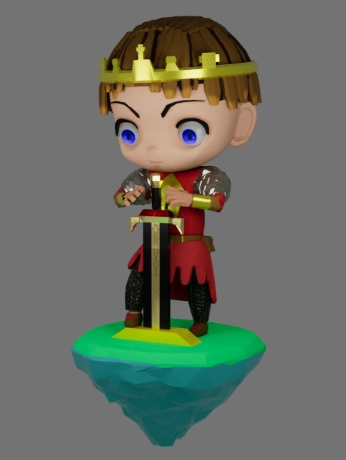

Chibi Knight
Info
- Triangles: 25,s203
- Software Used: Maya, Subtance Painter.

My First 3D Character
Since this was my first character it took a lot of preparation and research to make it. I took inspiration from the Chibi characters in Animal Crossing. I first decided the settings around my character, what world he'd be in, what game genre it would be. I decided to go with an RPG and make him a prince, So I tried to make him a fighting attire that would still look royal despite being in a cute chibi style.I drew 2D references to use in Maya, Side, Front and the sword accesory.



Then started the 3D


After Finishing the Model I used the easy Rig tool to make it pose around the sword and it was done.
Things I'd redo:
- I could have substitude some geometry with Normals to save on Faces.
- Since I used the easy rig tool the hands are not fully rig and dont curl around the sword handle.
- Add more colors/jewelry to the crown would look much better i think.